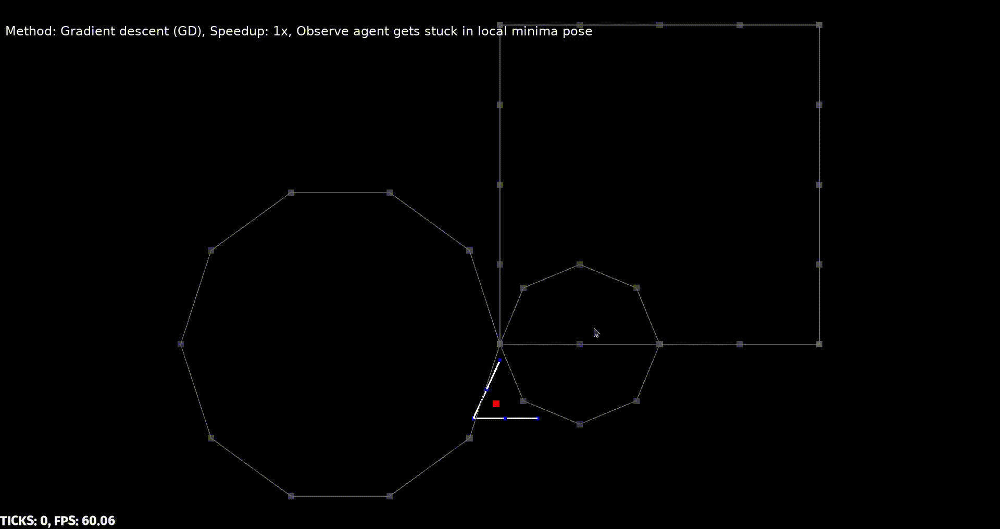
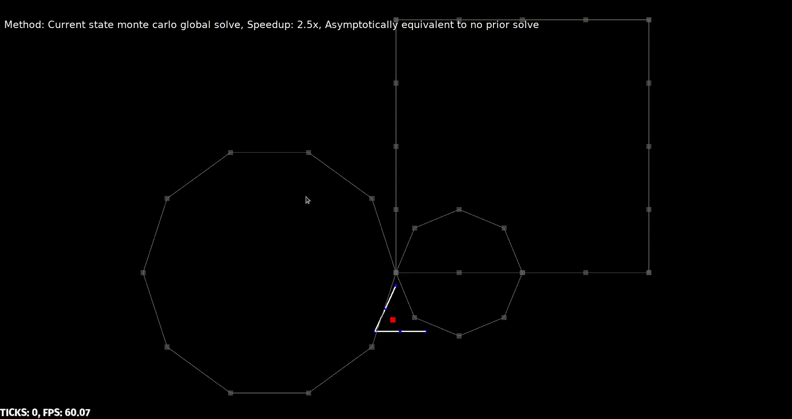

Motion planning for 2D stick-figure climbing agents
Created by Yashasvi Sriram Patkuri Avaliable at https://yashorts.github.io/stick-solo-presentation/
Me
- @buggedbit
- MS, CS @ UMN
- BTech, CSE @ IIT Bombay
Interests
- Bringing math to life
- Climbing, Paddle sports, Surfing
- Trying new things in general
- Planning, Sensing, Robots, Autonomous Cars
the problem
the world
- 2D wall
- points representing holds
- has a start hold and a finish hold
chain agent
- line segments connected via revolute joints
- can be chained
- one free end can latch to a hold in wall (pivot)
- controlled via joint angles
- N line segments gives N "R" joints (including latch)
the task
- Plan and reach
- Be real-time
- Make motion natural using simple heuristics
the motivation
- In games, this can be used to improve climbing character animation
- As robots, they can climb difficult and challenging terrain for reconnaissance and rescue missions
- Can generate new climbing routes and detect dangerous ones
- Super fun to watch agents/robots climb walls
related work
approach
PRM/A* + IK
- Split the task
- Plan in holds space using Probabilistic Roadmap and A*(or D*-Lite) search
- Move from hold to hold using Inverse Kinematics
simplest case - 2R chain - IK
- Free end spans a concentric donut with inner and outer radii $| l_1 - l_2 |$ and $l_1 + l_2$
- Given goal point is in the span
- $ l = 0 \rightarrow l_1 = l_2 \& (x, y) = (0, 0) \rightarrow \theta_2 = 180^\circ $
simplest case - 2R chain - IK
simplest case - 2R chain - PRM
- PRM edge lens can be clamped b/w $| l_1 - l_2 |$ and $l_1 + l_2$ to ensure reachability of free end
simplest case - 2R chain - demo
BG: joint angle space, Red: goal, Blue: current
simplest case - 2R chain - tradeoffs
- With proper PRM edge lens, PRM path existence guarantees reachability
- One IK solve per hold in the PRM generated path
nR chain - IK
- Too many degrees of freedom, therefore no general analytical solution
- Employ iterative solutions
nR chain - IK - Jacobian Transpose
Ex. 4R chain - Jacobian Transpose
nR chain - IK - Pseudo Inverse
Ex. 4R chain - Pseudo Inverse
nR chain - tradeoffs
- With proper PRM edge lens, PRM path existence guarantees reachability
- One IK gradient step per tick
- Multiple solutions exist, no control over what we are converging onto
Climb cycle
- A cyclic state machine to animate climbing motion
Two arm as 2 independent nR chains
- Two arms modeled using 2 nR chains
- Independent motion but connected at neck

Two arm - Climb cycle
- Move a random arm to the next milestone
- Move neck below the latest moved arm
- Move the other arm
- Go to step 1
Two arm - Climb cycle
Four arm
- Four arms modeled using 4 nR chains
- Independent motion but connected at neck and tail, neck to tail line segment is always vertical
Four arm - Climb cycle
- Move a random arm to the next milestone
- Move neck and tail below the latest moved arm simultaneously
- Move the opposite leg to a certain tuned displacement from tail
- Move the other arm next milestone
- Move neck and tail below the latest moved arm simultaneously
- Move the opposite leg to a certain tuned displacement from tail
- Go to step 1
Four arm - Climb cycle
Planning hierarchy - Until now
- Hold space planning using PRM/A*
- Orchestrating arms using climb cycle
- Hold to hold using analytical/iterative IK
Computational bottlenecks - Until now
- IK gradient descent step - matrix multiplications or inverses
Pros - Until now
- Reasonable reachability guarantees for chain agents
- Reachability guarantees are only as good as the climb cycle
- Pretty good motion
Cons - Until now
- No control over descent i.e. pose attained
- No multi limb coordination
- No considerations of gravity
- No variance in generated motion during IK phase
Fixes
- Model two arms as a single chain instead of 2 independent chains
- Add center of mass terms into gradient descent
- Clamp joint angles. Previously $(-\infty, \infty)$, now something like $[-30^\circ, 60^\circ]$
2 arm as 4R
Gravity
- Adding gravity term to the loss function for gradient descent
- Everything is expressed in terms of joint angles
Gravity - impl detail
- As is the time complexity of calculating these terms is $O(N^3)$
- But using substructres (dynamic programming) we can bring it down to $O(N^2)$
with and without gravity
New problems
- Constraints + Gradient descent = local minima
- Can be mitigated but still a core problem
Montecarlo methods - Arbitrarly close global IK solves
- To prevent bad local minima we need general global IK solves
- But there are none for n > 2!
- So comprimise. Go for approximate global solves
No prior random sample solve
- Given a goal free end position, sample many joint angle tuples within clamps
- Compute the loss function for each tuple
- Keep track of tuple that gives closest to goal
- Can be made arbitrarily close to global optimum
- Parallelizable
No prior random sample solve
Current state random sample solve
- Similar to no prior random sample solve
- Instead of uniformly sampling the tuple in the clamps space, start from current joint angle space
- Sample around the current state, keep track of best tuple, and repeat from there
- More prone to local minima than former, but faster
- Can be made arbitrarily close to global optimum
- Parallelizable
Integration with gradient descent
- Since monte carlo methods bring approximately close to goal, use gradient descent from there to snap to goal
- In practice
Perks
- Due to nature of monte carlo solves the generated motion has variance even during IK phase
Planning hierarchy - Until now
- Hold space planning using PRM/A*
- Hold to hold using monte carlo solves + gradient descent snapping
Computational bottlenecks - Until now
- Monte carlo sampling
- IK gradient descent step - matrix multiplications or inverses
Pros - Until now
- Reasonable reachability guarantees
- Multi limb coordination
- Prevent unwanted poses
- Gravity effects
- Pretty good motion
- Varied motion generation even in IK phase
Cons - Until now
- 2 arms as 4R is good but solve is not generalizable for 4 arm agent
- Monte carlo method becomes quickly untracable as chain size increases
Fixes
- Compose chain agents and add a level of control to the hierarchy stack
tree agent
- chain agents in a tree structure
- one free end of a chain agent can latch to a hold in wall (pivot)
- controlled via joint angles, but has hierarchical control
| 4R (chain) | 2 x 2R (tree) |
| both translation and rotation is transferred down the chain | hierarchical control, only translation is transferred down the tree |
advantages
- move one chain agent its sub tree moves along with it
- only have to plan IK for single chain at a time, can keep computation within bounds
- inherently composable
- can model more types of animals
2 arm as 2x2R tree agent
- Defns: Holding arm, Reaching arm and a neck
- PRM/A* and IK planners are already in place
- For a hold to hold transition, neck position is the only unknown
Finding good neck position
- In general this is a non-trivial task (as will be shown later)
- Just imagine where your neck goes to make your reaching hand wants to go next hold
- Best done using function approximators like neural networks
- No training data, but a loss function and a world, smells like RL
NN - Input/output
- Angles and angle clamps need not be an input
- Should only depend on pivot, lengths of links and current reaching arm goal
- So NN is responsible for discrete control instead of contiuous control, huge burden off of the network!!
- Reflected in training times and effectiveness
- Only have to do the inference once per hold to hold transition rather than every tick
NN - Input/output
- Shift and scale invariance
- Input size = number of total links + 2
- Output is a 2-tuple specifying unscaled neck position
NN - Optimizor
- Cross entropy method is used for optimization
- Simple, works well for small tasks, easy to implement, parallelizable
| Parameter | Value |
|---|---|
| Generations | 500 |
| Batch size | 50 |
| Num episodes | 20 |
| Num episode ticks | 200 |
| Elite frac | 0.25 |
| Noise factor | 1 |
NN - Reward function
During the episode
- Distance of neck to its goal (given by NN)
- Distance of reaching hand to its goal (given by PRM/A*)
- Value of center of mass relative y coordinate
- Distance of certer of mass x from its goal
After the episode
- High reward for neck reaching close to its goal (given by NN)
- High reward for reaching hand reaching close to its goal (given by PRM/A*)
NN - Layers
- NN is kept as small as possible
- FCN with 2 x 16
- ReLU activation was used
NN - Parallelization speedup
- Parallelizing on 8 CPU cores yielded 36% speedup
- Total training time ~10mins!
NN - Viz
- Given an agent, the NN is a function from $R^2 \rightarrow R^2$ (reaching goal to neck goal)
- Nice visualization, useful for tuning hyper parameters and debugging
NN - Left and right networks
- Since it is so cheap to train networks we train one for each case
- This can be used to model different dexterous behavior
NN - Trained Policy Mag Dir Viz
- The $R^2 \rightarrow R^2$ trained policy viz can be made using magnitude and direction graph pair
NN - Trained Policy Texture Map Viz
- The $R^2 \rightarrow R^2$ trained policy viz can be made using texture mapping
Testing
- A climbing route with left, right, diagonal, up and down movements is chosen to compare various methods
Vanilla gradient descent - 2 arm as 4R
Monte carlo methods - 2 arm as 4R
NN policy - 2 arm as 2x2R

Planning hierarchy - Until now
- Hold space planning using PRM/A*
- Neck goal using Cross entropy optimized neural network
- IK using monte carlo solves + gradient descent snapping
Computational bottlenecks - Until now
- Monte carlo sampling
- IK gradient descent step - matrix multiplications or inverses
- Neural network training but it can be done before climbing
Pros - Until now
- Reasonable reachability guarantees
- Multi limb coordination
- Prevent unwanted poses
- Gravity effects
- Pretty good motion
- Varied motion generation even in IK phase
- Can be extended to larger tree structure with reasonable effort
Cons - Until now
- Does not handle the cases where the agent pivots using two ends
- Since no datasets are used all heuristics are based on our judgment and may fail for any practical use
- Snapping using gradient descent is flimsy due to vanishing gradients problem
Future work
- Extrapolate to larger tree structures
- Handle simultaneous pivot dynamics
- Multiple tree agent coordination?